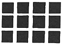
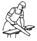
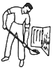
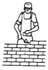
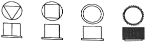
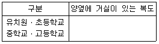
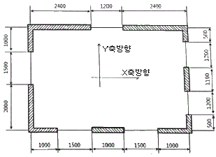
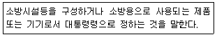
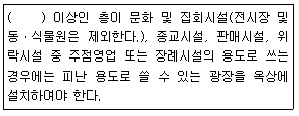
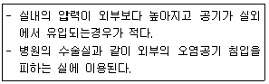

실내건축기사(구) (2019-04-27 기출문제)
1과목: 실내디자인론
1. 디자인 요소 중 점에 관한 설명으로 옳은 것은?
- 면의 한계, 면들의 교차에서 나타난다.
- 기하학적으로 크기가 없고 위치만 있다.
- 두 점의 크기가 같을 때 주의력은 한 점에만 작용한다.
- 배경의 중심에 있는 점은 동적인 효과를 느끼게 한다.
(정답률: 78%)

2. 천창(天窓)에 관한 설명으로 옳지 않은 것은?
- 차열, 통풍에 유리하다.
- 벽면의 활용성을 높일 수 있다.
- 건축계획의 자유도가 증가한다.
- 밀집된 건물에 둘러싸여 있어도 일정량의 채광을 확보할 수 있다.
(정답률: 78%)
3. 공간의 분할 방법을 차단적, 상징적, 지각적(심리적) 분할로 구분할 경우, 다음 중 상징적 분할에 속하는 것은?
- 조명에 의한 분할
- 고정벽에 의한 분할
- 식물 화분에 의한 분할
- 마감재의 변화에 의한 분할
(정답률: 65%)
4. 공동주택의 평면형식 중 계단실형에 관한 설명으로 옳지 않은 것은?
- 각 세대의 채광 및 통풍이 양호하다.
- 각 세대의 프라이버시 확보가 용이하다.
- 도심지 내의 독신자용 공동주택에 주로 사용된다.
- 통행부 면적이 작은 관계로 건축물의 이용도가 높다.
(정답률: 62%)
5. 실내디자인의 궁극적인 목적으로 가장 알맞은 것은?
- 공간의 품격을 높이는 것이다.
- 경제성 있는 공간을 창조하는 것이다.
- 인간생활의 쾌적성을 추구하는 것이다.
- 공간예술로서 모든 분야의 통합에 의한 감성적 요소의 부여에 있다.
(정답률: 82%)
6. 공간의 구성요소 중 일반적으로 가장 먼저 인지되는 요소로, 시각적 대상물이 되거나 공간에 초점적 요소가 되기도 하는 것은?
- 천장
- 바닥
- 벽
- 보
(정답률: 81%)
7. VMD에 관한 설명으로 옳지 않은 것은?
- VMD는 visual Merchandisng의 약자이다.
- VMD는 고객이 지향하는 이미지를 구체화 시키는 판매전략으로서 디스플레이와 동일한 개념이다.
- VMD는 상품계획에서부터 광고, 판매에 이르기까지 각 기능이 체계적으로 움직여야 하는 전략 수단이다.
- 성공적인 VMD 전개는 VP(Visual Presentation), PP(Point of Presentation), Presentation), IP(Item Presentation)가 충실할 때 가능하다.
(정답률: 66%)
8. 장식물의 선정과 배치상의 일반적인 주의사항으로 옳지 않은 것은?
- 좋고 귀한 것은 돋보일 수 있도록 많이 진열한다.
- 계절에 따른 변화를 시도할 수 있는 여지를 남긴다.
- 여러 장식품들이 서로 균형을 유지하도록 배치한다.
- 형태, 스타일, 생상 등이 실내공간과 어울리도록 한다.
(정답률: 86%)
9. 주방 작업대의 배치유형 중 ㄷ자형에 관한 설명으로 옳은 것은?
- 인접한 세 벽면에 작업대를 붙여 배치한 형태이다.
- 두 벽면을 따라 작업이 전개되는 전통적인 형태이다.
- 좁은 면적 이용에 효과적이므로 소규모 부엌에 주로 이용된다.
- 작업동선이 길고 조리면적은 좁지만 다수의 인원이 함께 작업할 수 있다.
(정답률: 75%)
10. 디자인 표현 중에서 반복, 교체, 점진 등을 통해 나타나는 디자인 원리는?
- 균형
- 강조
- 리듬
- 대비
(정답률: 79%)
11. 조명에 관한 설명으로 옳지 않은 것은?
- 올바른 실내조명은 조명의 질, 색, 조도가 적절한 균형을 이루어야 한다.
- 장식조명은 조명기구 자체가 하나의 예술품과 같이 강조되거나 분위기를 살려주는 역할을 한다.
- 국부 조명은 어떤 한 건축적인 요소에 초점을 집중시킬 때나, 하나의 실에서 영역을 구획 할 때도 사용된다.
- 전반, 국부 겸용 조명은 공간 자체에 변화와 생동감을 주지는 않지만 실 전체를 평균적으로 밝고 온화한 분위기로 만든다.
(정답률: 73%)
12. 전시공간의 특수전시 방법 중 사방에서 감상해야 할 필요가 있는 조각물이나 모형을 전시하기 위해 벽면에서 띄어놓아 전시하는 방법은?
- 디오라마 전시
- 파노라마 전시
- 하모니카 전시
- 아일랜드 전시
(정답률: 76%)
13. 동선계획에 관한 설명으로 옳은 것은?
- 동선의 속도가 빠른 경우 단 차이를 두거나 계단을 만들어 준다.
- 동선의 빈도가 높은 경우 동선 거리를 연장하고 곡선으로 처리한다.
- 동선이 복잡해 질 경우 별도의 통로공간을 두어 동선을 독립시킨다.
- 동선의 하중이 큰 경우 통로의 폭을 좁게 하고 쉽게 식별할 수 있도록 한다.
(정답률: 68%)
14. 은행의 영업장 계획에 관한 설명으로 옳지 않은 것은?
- 고객이 지나는 동선은 되도록 짧게 한다.
- 책임자석은 담당계가 보이는 위치에 배치한다.
- 사무의 흐름을 고려하여 서로 상관관계가 깊은 부분은 가능한 접근 배치한다.
- 시선을 차단시키는 구조벽체나 기둥을 사용하여 고객부문과 업무부문을 차단한다.
(정답률: 73%)
15. 사무실의 책상배치 유형 중 면적효율이 좋고 커뮤니케이션(communication)형성에 유리하여 공동작업의 형태로 업무가 이루어지는 시무실에 적합한 유형은?
- 동향형
- 대향형
- 자유형
- 좌우대칭형
(정답률: 71%)
16. 시스템 가구에 관한 설명으로 옳지 않은 것은?
- 단순미가 강조된 가구로 수납기능은 떨어진다.
- 규격화된 단위 구성재의 결합으로 가구의 통일과 조화를 도모할 수 있다.
- 기능에 따라 여러 가지 형태로 조립, 해체가 가능하여 배치의 합리성을 도모할 수 있다.
- 모듈계획을 근간으로 규격화된 부품을 구성하여 시공기간 단축 등의 효과를 가져 올 수 있다.
(정답률: 83%)
17. 오피스 랜트스케이프(office landscape)에 관한 설명으로 옳지 않은 것은?
- 시각적인 프라이버스 확보가 어렵고, 소음상의 문제가 발생할 수 있다.
- 산만하고 인위적인 분위기를 정리하기 위해 고정된 간막이벽으로 구획한다.
- 오피스 작업을 사람의 흐름과 정보의 흐름을 매체로 효율적인 네트워크가 되도록 배치하는 방법이다.
- 사무공간의 능률향상을 위한 배려와 개방공간에서의 근무자의 심리적 상태를 고려한 사무공간 계획 방식이다.
(정답률: 75%)
18. 다음 중 주거공간의 영역 구분(zoning) 방법과 가장 거리가 먼 것은?
- 행동의 목적에 따른 구분
- 공간의 분위기에 따른 구분
- 사용자의 범위에 따른 구분
- 공간의 사용시간에 따른 구분
(정답률: 69%)
19. 균형의 유형 중 대칭적 균형에 관한 설명으로 옳은 것은?
- 완고하거나 여유, 변화가 없이 엄격, 경직될 수 도 있다.
- 가장 완전한 균형의 상태로 공간에 질서를 주기가 어렵다.
- 자연스러우며 풍부한 개성을 표현할 수 있어 능동의 균형이라고도 한다.
- 물리적으로 불균형이지만 시각상 힘의 정도에 의해 균형을 이루는 것을 말한다.
(정답률: 70%)
20. 사무소 건축의 실단위 계획 중 개방식 배치에 관한 설명으로 옳지 않은 것은?
- 독립성과 쾌적성이 우수하다.
- 자연채광에 인공조명이 필요하다.
- 전면적을 유효하게 이용할 수 있다.
- 방의 길이나 깊이에 변화를 줄 수 있다.
(정답률: 65%)
2과목: 색채학
21. 먼셀(Munsell)표기법에 맞는 물체색의 3속성은?
- 색채, 혼색, 현색
- 색상, 명도, 채도
- 색각, 색감, 색약
- 색상, 순도, 흰색도
(정답률: 84%)
22. 혼합되는 각각의 색 에너지(energy)가 합쳐져서 더 밝은 색을 나타내는 혼합은?
- 감산혼합
- 중간혼합
- 가산혼합
- 색료혼합
(정답률: 77%)
23. 기억색에 대한 설명으로 가장 옳은 것은?
- 대상의 실제색과 같게 기억한다.
- 대상의 표면색보다 선명하게 기억한다.
- 대상의 실제색보다 더 채도가 낮은 것으로 기억한다.
- 대상의 실제색보다 색상차를 크게 기억한다.
(정답률: 59%)
24. 오스트발트(Ostwald) 조화론의 등색상삼각형의 조화가 아닌 것은?
- 등순색계역의 조화
- 등백색계역의 조화
- 등흑색계역의 조화
- 등명도계역의 조화
(정답률: 75%)
25. 보색에 관한 설명으로 옳은 것은?
- 두 색을 혼합했을 때 무채색이 되는 색을 보색이라 한다.
- 색상환에서 서로 인접한 색이다.
- 먼셀 색상환에서 빨강의 보색은 파랑이다.
- 가법혼색에서 초록의 보색은 노랑이다.
(정답률: 70%)
26. 두 색이 부조화한 색일 경우, 공통의 양상과 성질을 가진 것으로 배색하면 조화한다는 저드(D.B. Judd)의 색체조화 원리는?
- 질서의 원리
- 숙지의 원리
- 유사의 원리
- 비모호성의 원리
(정답률: 65%)
27. 7YR에 대한 설명으로 옳은 것은?
- Y와 R의 중간 색상으로 R에 더 가깝다.
- Y와 R이 같은 비율로 혼합되어 있다.
- Y와 R의 중간 색상으로 Y에 더 가깝다.
- 직관적 표기법으로 알 수가 없다.
(정답률: 66%)
28. 다음 중 감법혼색과 관련이 있는 것은?
- 옵셋(offset) 인쇄
- 3원색은 Red, Green, Blue
- 3원색의 혼합색은 백색
- 색광의 혼합
(정답률: 65%)
29. 검정 사각형 사이로 백색 띠가 교차하는 공간 중앙에 회색 잔상이 느껴지게 디는데 이와 같은 현상은?

- 푸르킨예 현상
- 동화현상
- 융합현상
- 허먼 그리드 현상
(정답률: 64%)
30. 오스트발트 등가색환에 있어서의 조화를 기호로 나타낸 것 중 보색조화에 해당하는 것은?
- 2ic - 4ic
- 8ni - 14ni
- 4Pg - 12Pg
- 2Pa - 14Pa
(정답률: 69%)
31. 영ㆍ헬름홀츠의 3원색설에 관한 설명으로 옳은 것은?
- 세 가지 시세포가 망막에 분포하여 여러 가지 색지각이 일어난다는 설이다.
- 반대색설이라고도 한다.
- 이화작용과 동화작용에 의해서 색감각이 이루어진다.
- 순응, 대비, 잔상현상으로 색각 현상을 설명할 수 있다.
(정답률: 57%)
32. 한국산업표준(KS)을 기준으로 기본색 빨강의 색상범위에 해당하는 것은?
- 5RP 3.5/4.5
- 5YR 8/4
- 10R 9/5
- 7.5R 4/14
(정답률: 69%)
33. 어두운 색 가운데서 대비되어진 밝은색은 한층 더 밝게 느껴지고, 밝은색 가운데 있는 어두운 색은 더욱 어둡게 느껴지는 현상은?
- 동화 현상
- 색상 대비
- 명도 대비
- 채도 대비
(정답률: 76%)
34. 똑같은 에너지를 가진 각 파장의 단색광에 의하여 생기는 밝기의 감각은?
- 시감도
- 명순응
- 색순응
- 항상성
(정답률: 64%)
35. 색채계획의 과정에서 색채 심리 분석에 해당하지 않는 것은?
- 색채 이미지 측정
- 유행 이미지 측정
- 상품 이미지 측정
- 형태 이미지 측정
(정답률: 37%)
36. 적색에 백색의 색료를 혼합했을 때 채도의 변화는?
- 낮아진다.
- 혼합하기 전과 같다.
- 높아진다.
- 조금 높아진다.
(정답률: 77%)
37. 스캔된 원본의 색들과 인쇄된 출력물의 색들을 맞추기 위한 색채관리시스템(Color Management System, CMS)의 기준이 되는 색공간은?
- RGB 색체계
- CMYK 색체계
- CIE XYZ 색체계
- HSB 색체계
(정답률: 58%)
38. 문ㆍ스펜서의 조화분류에서, 미도(美度)를 설명한 것으로 틀린 것은?
- 균형있게 선택된 무채색의 배색은 아름다움을 나타낸다.
- 동일색상은 조화롭다.
- 같은 명도의 조화는 미도가 높다.
- 색상, 채도를 일정하게 하고 명도만 변화시키는 경우 많은 색상 사용시 보다 미도가 높다.
(정답률: 46%)
39. 조명이나 관측조건이 달라도 주관적 색체지각으로는 물체색의 변화를 느끼지 못하는 현상은?
- 색의 항상성
- 색의 시인성
- 색의 주목성
- 색의 연색성
(정답률: 65%)
40. 색채 조절의 효과로 가장 거리가 먼 것은?
- 마음의 안정을 찾는다.
- 일의 능률을 향상시킨다.
- 눈과 정신의 피로를 완화시킨다.
- 개인의 취향을 반영할 수 있다.
(정답률: 78%)
3과목: 인간공학
41. 시각표시단말기 VDT 사용에 관한 설명으로 적합하지 않은 것은?
- 화면상의 문자와 배경과의 휘도비(contrast)를 높인다.
- 눈으로부터 화면까지의 거리는 40cm 이상을 유지한다.
- 아래팔은 손등과 일직선을 유지하여 손목이 꺽이지 않도록 한다.
- 작업자의 시선은 수평선상으로부터 아래로 10~15° 이내가 되도록 한다.
(정답률: 64%)
42. 귀의 구조에 있어, 수직으로부터의 자세를 감지하는 기능과 가속 및 감속에도 감수성이 있는 기능을 가진 귀의 구조명칭은?
- 난원창(oval window)
- 구씨관(eustachi tube)
- 세청감관(proprioceoptor)
- 전정낭(vestibular sacs)
(정답률: 48%)
43. 신체활동의 에너지 소비에 대한 설명으로 적합하지 않은 것은?
- 작업 효율은 에너지 소비에 반비례한다.
- 신체활동에 따른 에너지 소비량에는 개인차가 있다.
- 어떤 작업에 대한 에너지가는 수행방법에 따라 달라진다.
- 신체적 동작 속도가 증가하면 에너지 소비량은 감소한다.
(정답률: 77%)
44. 과업의 결과를 반영하는 과업성과측정기준(task performance criteria)에 해당하지 않는 것은?
- 출력량(quantity of output)
- 성과시간(performance time)
- 내용의 타당성(content validity)
- 출력의 질적 수준(quality of output)
(정답률: 48%)
45. 단기 기억(short term memory)의 특성에 대한 설명 중 옳지 않은 것은?
- 단기기억 용량은 한계가 있다.
- 저장된 기억은 빠르게 소멸된다.
- 훈련에 의해 능력이 향상될 수 있다.
- 문제 해결을 위한 지식 저장 창고이다.
(정답률: 75%)
46. 산업안전보건법령상 근로자가 상시 작업하는 장소의 작업면 조도의 기준으로 옳지 않은 것은?
- 보통작업 : 150럭스 이상
- 정밀작업 : 400럭스 이상
- 초정밀작업 : 750럭스 이상
- 그 밖의 작업 : 75럭스 이상
(정답률: 52%)
47. 다음 중 신체 활동에 따르는 에너지소비량(kcal/min)이 가장 큰 직업은?



(정답률: 61%)
48. 작업대 높이의 설계 시 고려해야 할 사항으로 옳지 않은 것은?
- 개개인에게 맞는 조절식이 좋다.
- 거친 작업에는 팔꿈치 높이보다 약간 낮은편이 좋다.
- 섬세한 작업일수록 팔꿈치 높이보다 약간 낮아야 한다.
- 입식 작업대는 선 자세에서 팔을 굽혔을 때의 팔꿈치 높이를 기준으로 설계한다.
(정답률: 72%)
49. 도로 표지판이 가져야 할 요건이 아닌 것은?
- 적당한 거리에서 볼 수 있어야 한다.
- 지리적 경계내에서 표준화되어야 한다.
- 상징하고자 하는 것을 시각적으로 암시해야 한다.
- 다른 표지판과 구별이 어렵도록 디자인, 색상을 최대한 유사하게 해야 한다.
(정답률: 80%)
50. 음의 강도(intensity)를 정의할 때, 표준 음압은 몇 Hz의 순음을 기준으로 하는가?
- 1
- 10
- 100
- 1000
(정답률: 47%)
51. 인체계측에 있어서 구조적 인체치수에 관한 설명으로 맞는 것은?
- 표준자세에서 움직이지 않는 피측정자를 대상으로 신체의 각 부위를 측정한다.
- 신체의 각 부위간에 수행하는 기능에 따라 영향을 받으며 여러 가지 변수가 내재해 있다,
- 손을 뻗어 잡을 수 있는 한계는 팔길이만의 함수가 아니고 어깨 움직임, 몸통회전, 등 구부림 등에 의해서도 영향을 받는다.
- 신체적 기능을 수행할 때 각 신체부위가 독립적으로 움직이는 것이 아니라 서로 조화를 이루어 움직이기 때문에 이 치수가 사용된다.
(정답률: 50%)
52. 손의 기본 지각기능을 활용한 정보수집의 종류와 거리가 가장 먼 것은?
- 색 식별
- 입체 식별
- 중량 식별
- 경도 식별
(정답률: 77%)
53. 그림과 같이 스위치 노브(knob)를 촉각적으로 분별, 확인할 수 있도록 디자인한 것은 어떠한 암호화(coding) 방법을 활용한 것인가?

- 색에 의함 암호화
- 모양에 의함 암호화
- 위치에 의함 암호화
- 크기에 의함 암호화
(정답률: 79%)
54. 다음 중 수치를 정확히 읽어야 할 경우에 가장 적합한 표시장치의 형태는?
- 계수형
- 동침형
- 동목형
- 수직ㆍ수평형
(정답률: 70%)
55. 인체에서의 열교환과정에서 대사과정에 의해 발생되는 열이득 및 열손실의 주원인으로 가장 거리가 먼 것은?
- 전도
- 복사
- 대류
- 증발
(정답률: 51%)
56. 다음 중 소음원에 대한 소음의 제어로 가장 적절한 것은?
- 해당 설비의 진동량이나 진동 부분을 조정하여 감소시킨다.
- 고주파 소음을 내는 장치를 사용한다.
- 저주파 소음을 고주파의 소음보다 방향성이 크므로 자폐물 또는 방해물을 설치한다.
- 대형 저속송풍기보다 소형고속 송풍기를 설치한다.
(정답률: 65%)
57. 단위 면적당 표면에서 반사 또는 방출되는 빛의 양을 무엇이라 하는가?
- 조도
- 휘도
- 광도
- 반사율
(정답률: 44%)
58. 인간의 시력에 관한 설명으로 틀린 것은?
- 정상 시각에서의 원점은 거의 무한하다.
- 눈이 초점을 맞출 수 없는 가장 가까운 거리를 근점, 가장 먼 거리를 원점이라 한다.
- 시력은 정확히 식별할 수 있는 최소의 세부사항을 볼 때 생기는 시각(Visual angle)에 정비례한다.
- 최소분간시력은 눈이 식별할 수 있는 과녁의 최소 특징이나 과역 부분들 간의 최소 공간을 의미한다.
(정답률: 41%)
59. 인간이 느낄 수 있는 빛의 파장은 380~780nm이다. 서로 다른 색의 인식에 영향을 주는 빛의 속성이 아닌 것은?
- 파장의 차이
- 빛의 길이
- 파장의 순도
- 빛의 강도
(정답률: 34%)
60. 신경세포의 구성요소가 아닌 것은?
- 축삭
- 수상돌기
- 수의근
- 세포체
(정답률: 65%)
4과목: 건축재료
61. 점토기와 중 훈소와에 해당하는 설명은?
- 소소와에 유약을 발라 재소성한 기와
- 기와 소성이 끝날 무렵에 식염줄기를 충만시켜 유약 피막을 형성시킨 기와
- 저급점토를 원료로 900~1000℃로 소소하여 만든 것으로 흡수율이 큰 기와
- 건조제품을 가마에 넣고 연료로 장작이나 솔잎 등을 써서 검은 연기로 그을려 만든 기와
(정답률: 67%)
62. 다음 석재 중 평균 내구연한이 가장 작은 것은?
- 화강석
- 석회암
- 백운석
- 사암조립
(정답률: 62%)
63. 벤토나이트 방수재료에 관한 설명으로 옳지 않은 것은?
- 팽윤특성을 지닌 가소성이 높은 광물이다.
- 콘크리트 시공조인트용 수팽창 지수재로 사용된다.
- 콘크리트 믹서를 이용하여 혼합한 벤토나이트와 토사를 롤러로 전압하여 연약한 지반을 개량한다.
- 염분을 포함한 해수에서는 벤토나이트의 팽창반응이 강화되어 차수력이 강해진다.
(정답률: 46%)
64. 석고보드에 관한 설명으로 옳지 않은 것은?
- 주원료인 소석고에 혼화제를 넣고 물로 반죽하여 2장의 강인한 보드용 원지 사이에 채워 넣어 제조한 것이다.
- 내수성, 찬력성은 우수하나 단열성, 방수성은 좋지 않다.
- 벽, 천장, 칸막이 등에 주로 사용된다.
- 연하고 부서지기 쉬우므로 고정할 때는 못 등이 주로 사용되지만 그 부근이 파손될 우려가 있다.
(정답률: 66%)
65. 유리에 관한 설명으로 옳은 것은?
- 보통 판유리의 비중은 6.5 정도이다.
- 보통 판유리의 열전도율은 철재보다 매우 작다.
- 창유리의 강도는 일반적으로 압축강도를 말한다.
- 강화유리는 강도가 크고 현장 가공성이 좋다.
(정답률: 51%)
66. AE제의 역할로 옳지 않은 것은?
- 콘크리트의 워커빌리티 향상
- 물시멘트비 증가
- 콘크리트 내구성 향상
- 동결에 대한 저항성 증대
(정답률: 59%)
67. 인서트(insert)의 재질로 가장 적합한 것은?
- 주철
- 알루미늄
- 목재
- 구리
(정답률: 65%)
68. 다음 중 열가소성수지가 아닌 것은?
- 아크릴수지
- 염화비닐수지
- 폴리스티렌수지
- 페놀수지
(정답률: 50%)
69. 회반죽 바름을 한 벽체는 공기 중의 무엇과 반응하여 경화하는가?
- 탄산가스
- 산소
- 질소
- 수소
(정답률: 67%)
70. 무기질 단열재료 중 내열성이 높은 광물섬유를 이용하여 만드는 제품으로 불에 타지 않으며 가볍고, 단열성, 흡음성이 뛰어난 것은?
- 연질섬유판
- 암면
- 셀룰로오스 섬유판
- 경질우레탄폼
(정답률: 53%)
71. 합판에 관한 설명으로 옳지 않은 것은?
- 함수율 변화에 의한 신축변형이 크고 방향성이 있다.
- 3장 이상의 홀수의 단판(Veneer)을 접착제로 붙여 만든 것이다.
- 곡면가공을 하여도 균열이 생기지 않는다.
- 표면가공법으로 흡음효과를 낼 수가 있고 의장적 효과도 높일 수 있다.
(정답률: 53%)
72. 집성목재의 장점이 아닌 것은?
- 목재의 강도를 인공적으로 조절할 수 있다.
- 응력에 따라 필요한 단면을 만들 수 있다.
- 톱밥, 대팻밥, 나무부스러기를 이용하므로 경제적이다.
- 길고 단면이 큰 부재를 만들 수 있다.
(정답률: 54%)
73. 외부에 노출되는 마감용 벽돌로써 벽돌면의 색깔, 형태, 표면의 질감 등의 효과를 얻기 위한 것은?
- 광재벽돌
- 내화벽돌
- 치장벽돌
- 포도벽돌
(정답률: 72%)
74. 콘크리트 슬럼프 시험(Slump test)의 목적은?
- 물-시멘트의 용적비 계산
- 물-시멘트의 중량비 계산
- 시공연도 측정
- 콘크리트의 강도 측정
(정답률: 60%)
75. 합성수지도료의 특성에 관한 설명으로 옳지 않은 것은?
- 건조시간이 빠르고 도막이 단단하다.
- 내산성, 내알칼리성이 있어 콘크리트, 모르타르면에 바를 수 있다.
- 도막은 인화할 염려가 있어 방화성이 작은 단점이 있다.
- 투명한 합성수지를 사용하면 더욱 선명한 색을 낼 수 있다.
(정답률: 54%)
76. 건축용 접착제로서 요구되는 성능에 해당되지 않는 것은?
- 진동, 충격의 반족에 잘 견딜 것
- 장기부하에 의한 크리프가 클 것
- 취급이 용이하고 족성이 없을 것
- 고화 시 체적수축 등에 의한 내부변형을 일으키지 않을 것
(정답률: 73%)
77. 금속부식을 방지하기 위한 방법 중 옳은 것은?
- 큰 변형을 받은 금속은 불림하여 사용한다.
- 표면은 가급적 포습된 상태로 사용한다.
- 이종금속의 인접 또는 접촉 사용을 금한다.
- 부분적인 녹은 제거하지 않고 사용해도 좋다.
(정답률: 67%)
78. 바름벽 재료의 분류 중 바름벽에 필요한 강도를 발현시키기 위한 재료는?
- 마감재료
- 결합재료
- 보강재료
- 혼화재료
(정답률: 31%)
79. 다음 중 시멘트의 수경률을 구하는 식에서 분자에 속하는 것은?
- CaO
- SiO2
- Al2O3
- Fe2O3
(정답률: 40%)
80. 파티클 보드의 성질에 관한 설명으로 옳지 않은 것은?
- 고습도의 조건에서 사용하기 위해서는 방습 및 방수처리가 필요하다.
- 상판, 칸막이벽, 가구 등에 이용된다.
- 음 및 열의 차단성이 우수하다.
- 합판의 비해 면내 강성은 떨어지나 휨강도는 우수하다.
(정답률: 66%)
5과목: 건축일반
81. 아래와 같은 조건의 건축물에 설치하는 복도의 유효너비의 기준으로 옳은 것은?

- 2.4m 이상
- 2.0m 이상
- 1.8m 이상
- 1.5m 이상
(정답률: 47%)
82. 고대 이집트 건축의 형성배경과 가장 거리가 먼 것은?
- 석재가 풍부하다.
- 적은 우량으로 인한 지붕의 형태는 평지붕이다.
- 강한 햇빛이 짙은 그림자를 만들어 형태의 윤곽을 뚜렷하게 한다.
- 내세관 및 혼령의 중요성이 기념 건조물에는 반영되지 않았다.
(정답률: 70%)
83. 건축물에 설치하는 지하층 비상탈출구의 유효너비 및 유효높이의 기준으로 옳은 것은?
- 유효너비 0.75m 이상, 유효높이 1.5m 이상
- 유효너비 0.75m 이상, 유효높이 1.8m 이상
- 유효너비 1.0이상, 유효높이 1.5m 이상
- 유효너비 1.0이상, 유효높이 1.8m 이상
(정답률: 50%)
84. 비상경보설비를 설치하여야 할 특정소방대상물의 연면적 기준은? (단, 지하가 중 터널 또는 사람이 거주하지 않거나 벽이 없는 축사 등 동ㆍ식물 관련시설은 제외한다.)
- 300m2 이상
- 400m2 이상
- 500m2 이상
- 600m2 이상
(정답률: 41%)
85. 벽 및 반자의 실내에 접하는 부분의 마감이 불연재료이고, 자동식소화설비가 설치된 각 층바닥면적이 1000m2인 업무시설의 11층은 최소 몇 개의 영역으로 방화구획하여야 하는가?
- 2개의 영역으로 구획
- 3개의 영역으로 구획
- 5개의 영역으로 구획
- 층간 방화구획
(정답률: 60%)
86. 다음 그림과 같은 보강블록조의 평면도에서 x축방향의 벽량을 구하면? (단, 벽체두께는 150mm이며, 그림의 모든 단위는 mm임)

- 23.9cm/m2
- 28.9cm/m2
- 31.9cm/m2
- 34.9cm/m2
(정답률: 47%)
87. 소방시설법에서 정의하는 다음 내용에 해당하는 용어는?

- 특정소방대상물
- 소화설비
- 소방용품
- 소화용수설비
(정답률: 56%)
88. 목구조의 맞춤방법 중 걸침턱맞춤이 사용되는 목구조의 접합부분은?
- 왕대공 지붕틀의 ㅅ자보와 평보
- 왕대공 지붕틀의 평보와 왕대공
- 목조마루틀의 멍에와 장선
- 목조벽체의 기둥과 가새
(정답률: 41%)
89. 대통령령으로 정하는 특정소방대상물(신축하는 것만 해당)에 소방시설을 설치하려는 자는 그 용도, 위치, 구조, 수용 인원, 가연물(可燃物)의 종류 및 양 등을 고려하여 설계하여야 하는데 이와 같은 설계를 무엇이라 하는가?
- 소방시설 특수설계
- 최적화설계
- 성능위주설계
- 소방시설 정밀설계
(정답률: 38%)
90. 두께 12cm인 철근콘크리트 슬래브의 바닥면적 1m2에 대한 줄량은 일반적으로 얼마인가?
- 236kg
- 288kg
- 325kg
- 382kg
(정답률: 52%)
91. 방염성능기준 이상의 실내장식물 등을 설치하여야 하는 특정소방대상물이 아닌 것은?
- 근린생활시설 중 체력단련장
- 건축물의 옥내에 있는 종교시설
- 의료시설 중 종합병원
- 층수가 11층 이상인 아파트
(정답률: 66%)
92. 목구조 벽체의 수평력에 대한 보강 부재로 가장 유효한 것은?
- 가새
- 토대
- 통재기둥
- 샛기둥
(정답률: 62%)
93. 비상용승강기 승강장의 구조 기준으로 옳지 않은 것은?
- 승강장은 각층의 내부와 연결될 수 있도록 하되, 그 출입구(승강로의 출입구를 제외한다.)에는 갑종방화물을 설치할 것
- 벽 및 반자가 실내에 접하는 부분의 마감재료(마감을 위한 바탕을 포함한다)는 난연재료로 할 것
- 채광이 되는 창문이 있거나 예비전원에 인한 조명설비를 할 것
- 승강장 출입구 부근의 잘 보이는 곳에 당해 승강기가 비상용승강기임을 알 수 있는 표지를 할 것
(정답률: 66%)
94. 다음은 피난용도의 옥상광장을 설치하기 위한 건축법령이다. ()안에 들어갈 내용을 옳은 것은?

- 5층
- 6층
- 7층
- 11층
(정답률: 45%)
95. 국토교통부령으로 정하는 기준에 따라 건축물로부터 바깥쪽으로 나가는 출구를 설치해야 하는 대상이 아닌 것은?
- 종교시설
- 장례시설
- 위락시설
- 문화 및 집회시설 중 전시장
(정답률: 61%)
96. 스프링클러설비를 설치하여야 하는 특정소방대상물 중 스프링클러설비를 모든 층에 설치하여야 하는 수용인원의 기준으로 옳은 것은? (단, 문화 및 집회시설로서 동ㆍ식물원은 제외)
- 50명 이상
- 100명 이상
- 200명 이상
- 300명 이상
(정답률: 58%)
97. 고딕건축 양식의 특징과 관련 없는 것은?
- 첨두아치(Pointed arch)
- 트레이서리(Tracery)
- 플라잉 버트레스(Flying buttress)
- 펜덴티브(Pendentive)
(정답률: 56%)
98. 건축물에 설치하는 급수ㆍ배수등의 용도로 쓰는 배관설비의 설치 및 구조기준으로 옳지 않은 것은?
- 어떠한 경우라도 배관설비가 건축물의 주요부분을 관통하지 않도록 할 것
- 배관설비를 콘크리트에 묻는 경우 부식의 우려가 있는 재료는 부식방지조치를 할 것
- 승강기의 승강로안에는 승강기의 운행에 필요한 배관설비외의 배관설비를 설치하지 아니할 것
- 압력탱크 및 급탕설비에는 폭발등의 위험을 막을 수 있는 시설을 설치할 것
(정답률: 54%)
99. 건축물을 건축하거나 대수선하는 경우에 있어 국토교통부령으로 정하는 구조기준 등에 따라 구조 안전을 확인한 건축물 중 그 확인 서류를 허가권자에게 제출하여야 하는 경우가 아닌 것은?
- 층수가 2층 이상인 건축물
- 창고, 축사, 작물재배사 및 표준설계도서에 의하여 건축하는 건축물로 연면적 400m2이상인 건축물
- 기둥과 기둥 사이의 거리가 10m 이상인 건축물
- 국가적 문화유산으로 보존할 가치가 있는 건축물로서 국토교통부령으로 정하는 것
(정답률: 52%)
100. 건축허가 등을 할 때 미리 소방본부장 또는 소방서장의 동의를 받아야 하는 건축물 등의 범위 기준으로 옳지 않은 것은?
- 연면적이 300m2 이상인 건축물
- 항공기격납고
- 차고ㆍ주차장으로 사용되는 바닥면적이 200m2 이상인 층이 있는 건축물이나 주차시설
- 지하층 또는 무창층이 있는 건축물로서 바닥면적이 150m2 이상인 층이 있는 것
(정답률: 48%)
6과목: 건축환경
101. 굴뚝효과(stack effect)의 가장 주된 발생원은?
- 온도차
- 유속차
- 습도차
- 풍향차
(정답률: 69%)
102. 변전실의 위치 결정 시 고려할 사항으로 옳지 않은 것은?
- 부하의 중심위치에서 멀 것
- 외부로부터 전원의 인입이 편리할 것
- 발전기실, 축전지실과 인접한 장소일 것
- 기기를 반입, 반출하는데 지장이 없을 것
(정답률: 66%)
103. 자연환기량에 관한 설명으로 옳은 것은?
- 풍속이 높을수록 적어진다.
- 실내외의 압력차가 클수록 적어진다.
- 실내외의 온도차가 작을수록 많아진다.
- 공기유입구와 유출구의 높이의 차이가 클수록 많아진다.
(정답률: 67%)
104. 유효온도에 고려되지 않는 요소는?
- 기온
- 습도
- 기류
- 복사열
(정답률: 40%)
1⑤. 다음 설명에 알맞은 건축화조명의 종류는?
- 코브 조명
- 광창 조명
- 광천장 조명
- 밸런스 조명
(정답률: 49%)
106. 건축적 채광의 방법 중 측광(lateral lighting)에 관한 설명으로 옳은 것은?
- 통풍ㆍ차열에 불리하다.
- 편측채광의 경우 조도분리가 불균일하다.
- 구조ㆍ시공이 어려우며 비막이 불리하다.
- 근린의 상황에 따라 채광을 방해받는 경우가 없다.
(정답률: 66%)
107. 복사에 의한 전열에 관한 설명으로 옳은 것은?
- 고체 표면과 유체 사이의 열전달 현상이다.
- 일반적으로 흡수율이 작은 표면은 복사율이 크다.
- 알루미늄과 같은 금속의 연마면은 복사율이 매우 작다.
- 물체에서 복사되는 열량은 그 표면의 절대 온도의 2승에 비례한다.
(정답률: 30%)
108. 벽체의 열관류율을 작게 하여 단열효과를 얻고자 할 때, 그 방법으로 옳지 않은 것은?
- 흡수성이 큰 재료를 사용한다.
- 벽체 내부에 공기층을 구성한다.
- 열전도율이 작은 재료를 선택한다.
- 벽체 구성재료의 두께를 두껍게 한다.
(정답률: 63%)
109. 급탕배관의 설계 및 시공상 주의사항으로 옳지 않은 것은?
- 중앙식 급탕설비는 원칙적으로 중력식 순환 방식으로 한다.
- 급탕밸브나 플랜지 등의 패킹은 내열성 재료를 선택하여 시공한다.
- 관의 신축을 고려하여 건물의 벽관통부분의 배관에는 슬리브를 끼운다.
- 관의 신축을 고려하여 배관의 굽힘 부분에는 스위블 이음으로 접합한다.
(정답률: 43%)
110. 다음 설명에 알맞은 환기법은?

- 급기팬과 배기팬의 조합
- 급기팬과 자연배기의 조합
- 자연급기와 배기팬의 조합
- 자연급기와 자연배기의 조합
(정답률: 46%)
111. 공기 중의 음속이 344m/s, 주파수가 450Hz일 때 음의 파장(m)은?
- 0.33
- 0.76
- 1.31
- 6.25
(정답률: 54%)
112. 균시차에 관한 설명으로 옳은 것은?
- 균시차는 항상 일정하다.
- 진태양시와 평균태양시의 차를 말한다.
- 중앙표준시와 평균태양시의 차를 말한다.
- 진태양시의 10년간 평균값에서 중앙표준시를 뺀 값이다.
(정답률: 58%)
113. 용적 3000m3, 잔향시간 1.6초인 실이 있다. 잔향시간을 0.6초로 조정하려고 할 때, 이 실에 추가로 필요한 흡음력은? (단, sabine의 식을 이용)
- 약 500m2
- 약 600m2
- 약 700m2
- 약 800m2
(정답률: 36%)
114. 배수수직관 내의 압력변화를 방지 또는 완화 하기 위해, 배수수직관으로부터 분기ㆍ입상하여 통기수직관에 접속하는 통기관은?
- 각개통기관
- 루프통기관
- 결합통기관
- 신정통기관
(정답률: 36%)
115. 표면결로의 발생 방지 방법에 관한 설명으로 옳지 않은 것은?
- 단열 강화에 의해 실내측 표면온도를 상승시킨다.
- 직접가열이나 기류촉진에 의해 표면온도를 상승시킨다.
- 수증기 발생이 많은 부엌이나 화장실에 배기구나 배기팬을 설치한다.
- 높은 온도로 난방시간을 짧게 하는 것이 낮은 온도로 난방시간을 길게 하는 것보다 결로 발생 방지에 효과적이다.
(정답률: 63%)
116. 급수방식 중 고가수조방식에 관한 설명으로 옳지 않은 것은?
- 급수압력이 일정하다.
- 단수 시에도 일정량의 급수가 가능하다.
- 대규모의 급수 수요에 쉽게 대응할 수 있다.
- 위생성 및 유지ㆍ관리 측면에서 가장 바람직한 방식이다.
(정답률: 67%)
117. 휘도의 단위로 옳은 것은?
- cd
- cd/m2
- lm
- lm/m2
(정답률: 52%)
118. 기계적 에너지가 아닌 열에너지에 의해 냉동 효과를 얻는 냉동효과를 얻는 냉동기는?
- 터보식 냉동기
- 흡수식 냉동기
- 스크류식 냉동기
- 왕복동식 냉동기
(정답률: 51%)
119. 공기조화방식 중 이중덕트방식에 관한 설명으로 옳지 않은 것은?
- 전공기방식이다.
- 부하특성이 다른 다수의 실이나 존에도 적용 할 수 있다.
- 덕트 샤프트나 덕트 스페이스가 필요 없거나 작아도 된다.
- 냉ㆍ온풍의 혼합으로 인한 혼합손실이 있어서 에너지 소비량이 많다.
(정답률: 62%)
120. 다음 중 음의 고저 감각에 가장 주된 영향을 주는 요소는?
- 음색
- 음의 크기
- 음의 주파수
- 음의 전파속도
(정답률: 69%)